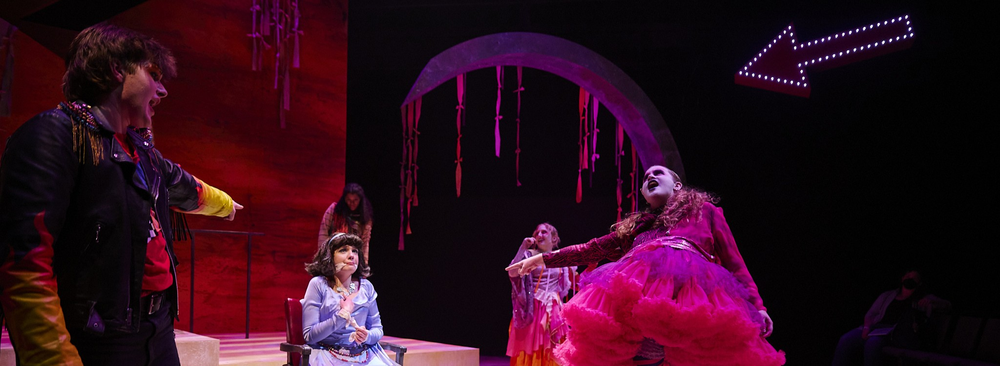
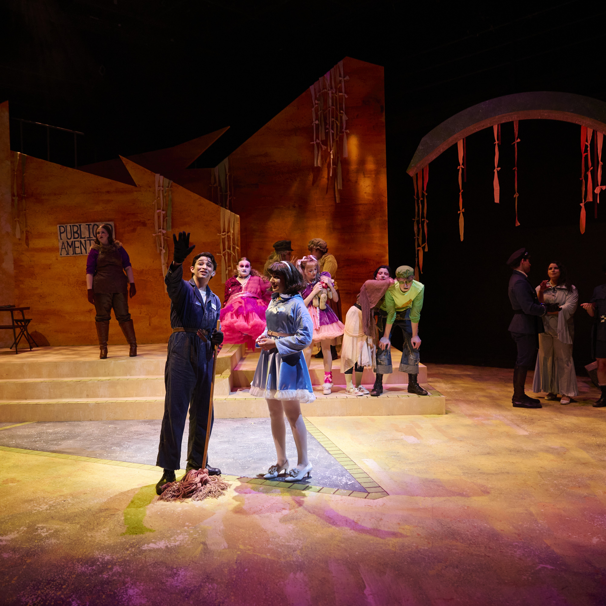
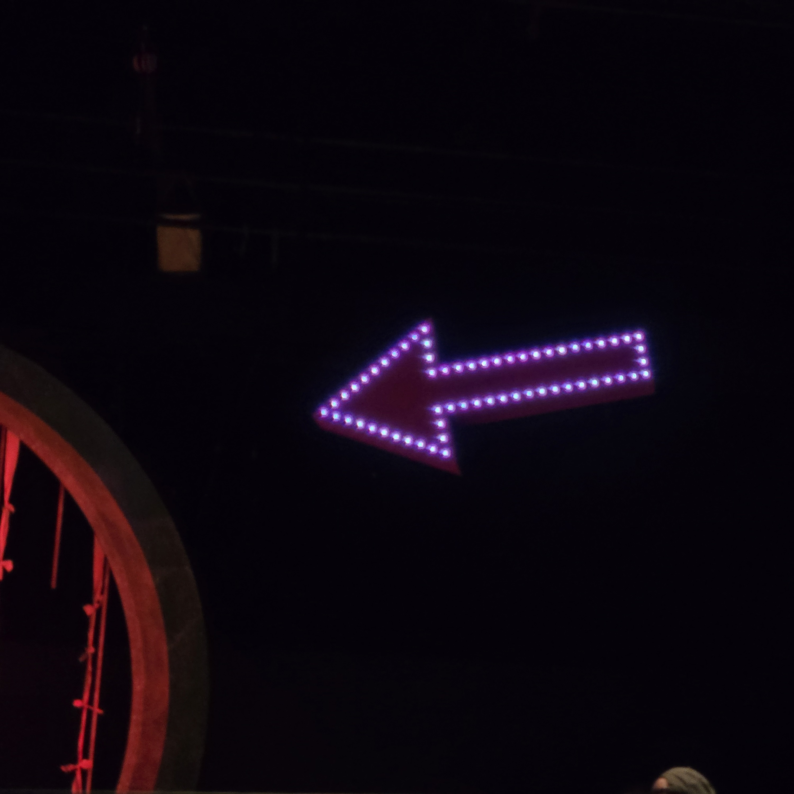

Urinetown at UB

UB Blackbox Theater
- Doug Weyand, Director and Choreographer
- Lynne Koscielniak, Faculty Lighting Mentor
- Mallory Tirone, Lighting Designer
- Elle Dixon, Set Designer
- Faith Marsala, Costume Designer
Lighting Programmer, Board Op, and Electrician
- Programmed on EOS Apex 10.
- Worked with Evelyn McLaughlin (ALD) to plan signal flow and wiring for LED tape arch and LED pixel arrow.
- Learned EOS pixel mapping tools for the LED pixel arrow.
- Helped head electrian, Phoenix Hall, with hang, focus, and patching
- Completed pre-show checks with house remote running iRFR.
- After the show closed, aided McLaughlin in converting the arrow to a permanenent LED mockup for demos.



Photos by Eric Tronolone and Koby Fallon